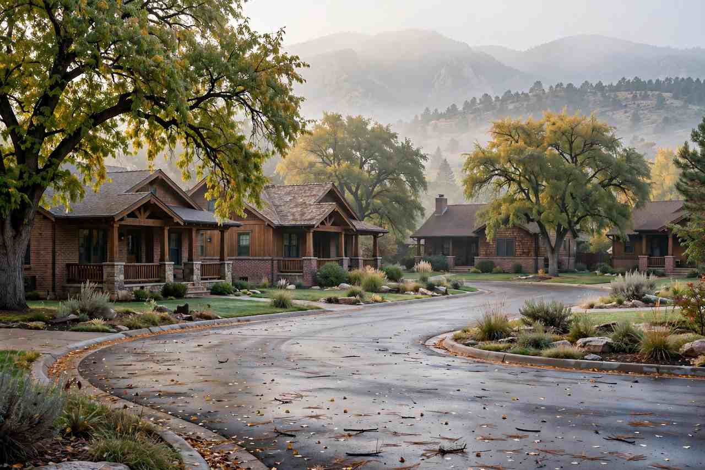

Rodent Control · Steamboat Springs, CO
Fast Rodent Control in Steamboat Springs, CO
Rats in the attic or mice in the kitchen in Steamboat Springs? Murvo provides same-day rodent control with local crews who inspect first, remove the animals already inside, and seal the entry points they used. Every job is quoted flat-rate in writing before work begins and backed by a written guarantee, covering homes and businesses across Routt County. Service covers 1 ZIP codes across Routt County, including 80487, with same-day appointments where schedules allow.
24/7Availability
1ZIP codes covered
Same-dayResponse
Licensed · Upfront options · Written guarantees · Fully insured
Steamboat Springs at a glance
Local Rodent Control for Steamboat Springs, CO.
Routt County
Countynorthwest Colorado
RegionBoulder · 89 mi
Nearest metro110 miles northwest of Denver
From Denver1
ZIP codes covered Service by service in Steamboat Springs
Rodent Control Services Available in Steamboat Springs
The full range of residential and commercial rodent services in Steamboat Springs and Routt County - built around the species and housing here, from emergency removal and same-day control to exclusion, proofing, trapping, cleanup, and damage repair. Every service below is quoted flat-rate in writing and backed by our workmanship guarantee.
- 01Rodent Control↗
- 02Rodent Inspection↗
- 03Rodent Removal↗
- 04Rodent Exclusion↗
- 05Rodent Proofing↗
- 06Rat Control↗
- 07Mice Control↗
- 08Mouse Removal↗
- 09Rat Removal↗
- 10Rodent Trapping↗
- 11Rodent Baiting↗
- 12Rodenticide Application↗
- 13Attic Rodent Removal↗
- 14Crawl Space Rodent Removal↗
- 15Wall Rodent Removal↗
- 16Kitchen Rodent Control↗
- 17Garage Rodent Control↗
- 18Commercial Rodent Control↗
- 19Residential Rodent Control↗
- 20Emergency Rodent Removal↗
- 21Same-Day Rodent Control↗
- 22Rodent Damage Repair↗
- 23Rodent Waste Cleanup↗
- 24Rodent Disinfection↗
- 25Rodent Odor Removal↗
- 26Dead Rodent Removal↗
- 27Rodent Dropping Cleanup↗
- 28Rodent Exclusion for Roofs↗
- 29Rodent Exclusion for Vents↗
- 30Rodent Exclusion for Chimneys↗
Rodent Control in Steamboat Springs
Rodent Control in Steamboat Springs
In Steamboat Springs, suburban homes at the foothill interface, cabins and second homes, and older in-town homes with basements give rodents warmth, shelter, and easy routes through garage door seals, foundation and sill gaps, roofline gaps at snow-loaded eaves, and vents on cabins and outbuildings, especially once nights turn cold across Routt County. Our licensed, insured technicians identify the species, map active runways, and build a control plan around your home rather than a generic spray. Every visit is documented with photos, trap records, and clear next steps for your household.
In Steamboat Springs, rodent control is not a generic spray-and-go service. Rodents exploit garage door seals, foundation and sill gaps, roofline gaps at snow-loaded eaves, and vents on cabins and outbuildings in suburban homes at the foothill interface, cabins and second homes, and older in-town homes with basements, and a fix that ignores those routes does not last. Murvo's Steamboat Springs team inspects first, shows you the evidence - droppings, gnaw marks, entry gaps - and then lays out the work with a flat-rate written quote. We serve all of Routt County from Steamboat Springs, including Oak Creek, Phippsburg, and every job is covered by our written workmanship guarantee. Homes near McCoy tend to show activity first in Steamboat Springs, which is why inspections start with garage door seals, foundation and sill gaps, roofline gaps at snow-loaded eaves, and vents on cabins and outbuildings.
Consider how a visit unfolds. The technician walks the exterior before touching anything indoors, noting gaps, rub marks, and food sources. Inside, attic and crawl-space evidence shapes the trapping plan, which is adjusted visit by visit as numbers change. Cleanup guidance covers contaminated areas safely, and exclusion work closes the route permanently. Throughout, photographs and written notes keep you informed, so progress is something you can see and verify rather than something you are asked to trust. Photographs taken at the start make those later comparisons honest, because memory alone tends to blur the details.
After you book, we confirm a time window and your background-checked technician arrives in a marked vehicle with identification. They walk the property with you, inspect inside and out, and explain what they find with photos. You receive a flat-rate written quote before any work starts. Once approved, trapping and sealing begin, and follow-up visits are scheduled before we leave, with the guarantee in writing. No work begins without your approval.
In most of Steamboat Springs, we can offer a same-day appointment for rodent control, and our lines are open 24/7 for urgent cases like scratching in the walls or a rodent in a living area. Your technician inspects first, explains the plan, and quotes a flat rate in writing before any work begins, so help starts fast without surprises. If you are seeing signs now, an inspection this week is the fastest way to know which situation you are in.
The honest answer is that it depends on species, activity level, and how much sealing your home needs, which is why Murvo inspects first and then gives you a flat-rate quote in writing. For national context only, Angi's 2026 data averages rat and mouse removal and control at $396, typically $189 to $655; that is not a Murvo price, and your written quote is the figure you pay.
Rodent Inspection in Steamboat Springs
Rodent Inspection in Steamboat Springs
A proper rodent inspection in Steamboat Springs answers three questions: which species is active, where is it nesting, and how is it getting inside? Our licensed, insured technicians document runways, droppings, and damage with photos and plain-language notes, then separate urgent fixes from preventive ones. There is no pressure to proceed, and every recommendation is priced in writing first.
Homeowners in Steamboat Springs call Murvo for rodent inspection because the problem here is specific: House mouse (Mus musculus) pressure around suburban homes at the foothill interface, cabins and second homes, and older in-town homes with basements, tight access at garage door seals, foundation and sill gaps, roofline gaps at snow-loaded eaves, and vents on cabins and outbuildings, and activity that follows the local season. Our Routt County crews diagnose the real source before recommending work, explain the options in plain language, and quote one flat rate in writing. Across Steamboat Springs - including Oak Creek, Phippsburg - every visit is backed by licensed, insured technicians and our written workmanship guarantee. In Steamboat Springs, rodent inspection calls most often involve suburban homes at the foothill interface, cabins and second homes, and older in-town homes with basements, where garage door seals, foundation and sill gaps, roofline gaps at snow-loaded eaves, and vents on cabins and outbuildings decide whether the fix holds.
The inspection starts outside, where we check the foundation, siding, pipe penetrations, garage doors, and roof junctions, because mice can squeeze through a gap the width of a pencil. Inside, we examine the attic, crawl space, insulation, stored items, and food areas for droppings, nests, rub marks, and gnaw damage. We also note where suburban homes at the foothill interface, cabins and second homes, and older in-town homes with basements create hidden routes through garage door seals, foundation and sill gaps, roofline gaps at snow-loaded eaves, and vents on cabins and outbuildings. Every finding is photographed and explained, and recommendations are marked urgent or preventive so you can stage the work sensibly.
To book, call any time; urgent inspections are answered 24/7. On the day, your technician works through the property methodically, reviews photographs with you on site, and leaves written findings plus any quote before departing. We agree a window, note where you have noticed signs, and confirm access to the attic and crawl space. You keep the report either way, and it remains useful for staging repairs later or comparing conditions at a future seasonal check.
You do not have to wait days for answers in Steamboat Springs. Same-day rodent inspection appointments are available in most areas, urgent calls are taken 24/7, and most home inspections take under an hour. You finish the visit with photos, written findings, and flat-rate pricing for anything we recommend. In Routt County, most cases involve the House mouse (Mus musculus) and the Deer mouse (Peromyscus maniculatus), so the inspection focuses on their routes first.
Your exact rodent inspection price is confirmed before we visit, and any follow-up work is quoted as a flat rate in writing after the inspection — no hourly billing. For context, Angi's 2026 data puts a professional rodent inspection nationally at $100 to $200, often credited toward the job if you proceed.
Rodent Removal in Steamboat Springs
Rodent Removal in Steamboat Springs
Finding droppings in the kitchen or hearing scratching overhead in Steamboat Springs means rodents are already living indoors, and they will not leave on their own. Murvo's rodent removal clears active House mouse (Mus musculus) and Deer mouse (Peromyscus maniculatus) with targeted trapping, removes animals hygienically, and closes the entry points behind them. One flat-rate written quote covers the program before work begins.
In Steamboat Springs, rodent removal is not a generic spray-and-go service. Rodents exploit garage door seals, foundation and sill gaps, roofline gaps at snow-loaded eaves, and vents on cabins and outbuildings in suburban homes at the foothill interface, cabins and second homes, and older in-town homes with basements, and a fix that ignores those routes does not last. Murvo's Steamboat Springs team inspects first, shows you the evidence - droppings, gnaw marks, entry gaps - and then lays out the work with a flat-rate written quote. We serve all of Routt County from Steamboat Springs, including Oak Creek, Phippsburg, and every job is covered by our written workmanship guarantee. Seasonal timing matters for rodent removal in Steamboat Springs: rodents surge in Steamboat Springs from October through April.
Why trap first instead of reaching for poison? Because trapped animals can be counted, removed, and disposed of hygienically, while poisoned animals can die where nobody can reach them. Technicians therefore match traps to species and setting, work attics, voids, and kitchens in sequence, and retrieve any carcass promptly. Contaminated nesting material is bagged carefully, affected surfaces are disinfected before any cleaning, and dry sweeping of droppings is never used, since that spreads contamination into the air. The sequence ends with monitoring, because removal without a confirming check is a claim rather than a result.
Call, describe the signs, and we will set a visit window, often for the same day. With approval, traps go in immediately. Return visits are already booked, so clearing, resetting, and progress updates happen without you chasing anyone for news. The first appointment confirms species and numbers, explains the trapping sequence, and produces your written quote. Photographs and catch records are shared as the program runs, giving you visible proof of progress rather than a verbal summary at the end.
For active infestations in Steamboat Springs, rodent removal can usually start the same day you call, and our team answers 24/7 when a rodent is loose in a living area. The first visit confirms activity and sets traps straight away; return visits then clear and reset them until monitoring shows the property is completely clear. Around Steamboat Springs, suburban homes at the foothill interface, cabins and second homes, and older in-town homes with basements give rodents the most cover, which is why entry points get checked before traps are set.
Cost depends on the species, how many animals are active, and how much sealing the home needs afterwards, so Murvo inspects first and quotes one flat rate in writing. For national context only, Angi's 2026 data averages rat and mouse removal at $396, typically $189 to $655. That benchmark is not a Murvo price; your written quote is the exact figure.
Rodent Exclusion in Steamboat Springs
Rodent Exclusion in Steamboat Springs
In suburban homes at the foothill interface, cabins and second homes, and older in-town homes with basements, exclusion is detective work as much as building work. Rub marks at garage door seals, foundation and sill gaps, roofline gaps at snow-loaded eaves, and vents on cabins and outbuildings, droppings below a vent, and daylight under a door each point somewhere different in Routt County homes. Our technicians follow those clues for House mouse (Mus musculus) and Deer mouse (Peromyscus maniculatus), prioritize active openings, and leave inactive weaknesses clearly noted.
In Steamboat Springs, rodent exclusion is not a generic spray-and-go service. Rodents exploit garage door seals, foundation and sill gaps, roofline gaps at snow-loaded eaves, and vents on cabins and outbuildings in suburban homes at the foothill interface, cabins and second homes, and older in-town homes with basements, and a fix that ignores those routes does not last. Murvo's Steamboat Springs team inspects first, shows you the evidence - droppings, gnaw marks, entry gaps - and then lays out the work with a flat-rate written quote. We serve all of Routt County from Steamboat Springs, including Oak Creek, Phippsburg, and every job is covered by our written workmanship guarantee. Homes near McCoy tend to show activity first in Steamboat Springs, which is why inspections start with garage door seals, foundation and sill gaps, roofline gaps at snow-loaded eaves, and vents on cabins and outbuildings.
Exclusion begins with a full exterior survey, paying particular attention to junctions where different materials meet, because those seams and transitions open up as a building ages and settles. Each opening is sealed with materials matched to it: copper mesh packed into gaps, hardware cloth over vents, metal flashing at roof junctions, and quality sealants for smaller cracks. Door sweeps are fitted, pipe gaps closed, and specialist roof, vent, and chimney sealing finished to weatherproof standards. Active animals are trapped out first.
The visit starts with a check that no animals remain inside, using trapping and monitoring where needed. Before leaving, we show you each finished seal, explain how it was protected, and confirm the guarantee paperwork. A later re-check confirms the seals are holding and activity has stopped. Once clear, your background-checked crew seals the agreed openings with chew-resistant materials, working cleanly around your home. You approve the finished work before we close the job.
Rodent exclusion in Steamboat Springs usually starts with a survey visit we can often schedule the same day you call. Sealing itself is booked as soon as any active animals are cleared, because nothing is sealed inside. Most homes are fully sealed within days, not weeks, and urgent entry points near wiring or food areas are prioritized first. A Steamboat Springs inspection confirms it on site - dropping size, gnaw marks, and entry points tell the story quickly.
For national context, Angi's 2026 data puts basic exclusion at $200 to $600, depending on access and the number of openings. That is a benchmark, not a Murvo price. After surveying your Steamboat Springs home, we list every opening that needs sealing and quote one flat rate in writing, so you pay for the work your property actually needs and nothing more.
Rodent Proofing in Steamboat Springs
Rodent Proofing in Steamboat Springs
The best rodent problem is the one that never starts. Rodent proofing in Steamboat Springs hardens your home before House mouse (Mus musculus) and Deer mouse (Peromyscus maniculatus) move in: sealing gaps, screening vents, fitting door sweeps, and removing the food and shelter that attract them. Murvo surveys the whole property, prioritizes the work, and gives one flat-rate written quote for the work.
In Steamboat Springs, rodent proofing is not a generic spray-and-go service. Rodents exploit garage door seals, foundation and sill gaps, roofline gaps at snow-loaded eaves, and vents on cabins and outbuildings in suburban homes at the foothill interface, cabins and second homes, and older in-town homes with basements, and a fix that ignores those routes does not last. Murvo's Steamboat Springs team inspects first, shows you the evidence - droppings, gnaw marks, entry gaps - and then lays out the work with a flat-rate written quote. We serve all of Routt County from Steamboat Springs, including Oak Creek, Phippsburg, and every job is covered by our written workmanship guarantee. The Steamboat Springs crews who handle rodent proofing also handle the follow-through - proofing, cleanup, and monitoring - so one visit can close the whole problem.
Proofing starts with a whole-property assessment inside and out, from overhanging branches and cluttered garages to unsealed vents and gaps under doors. The plan typically combines structural sealing of utility entries and foundation cracks with mesh screening on vents, chimneys, and rooflines, plus door sweeps where light shows underneath. We also address attractants: securing pet food and bird seed storage, trimming vegetation away from walls, and clearing harborage. Every item is prioritized so essential work happens first. Photos show each weakness we find.
On proofing day, expect one tidy visit for most homes. Before leaving, you walk the finished work together, confirm the guarantee in writing, and book the seasonal re-check that keeps the protection current year after year. Agreed sealing and screening are completed, sweeps are fitted, and attractant advice is tailored to your garage, kitchen, and yard. The re-check is not a formality, because it catches shifted sweeps, damaged screens, and new gaps before rodents discover them first.
Rodent proofing is preventive, so there is rarely a rush, but surveys in Steamboat Springs can often be arranged the same day you call, and always within a few days. Most proofing work is completed in a single visit once you approve the plan, and booking before colder weather gives your home protection ahead of the seasonal rush indoors. A Steamboat Springs inspection confirms it on site - dropping size, gnaw marks, and entry points tell the story quickly.
For national context, Angi's 2026 data puts exclusion, the core of proofing, at $200 to $600 for basic work. That figure is a benchmark, not a Murvo price. After surveying your Steamboat Springs property, we separate quick homeowner wins from specialist sealing and quote the professional work as one flat rate in writing, so you can stage spending sensibly.
Rat Control in Steamboat Springs
Rat Control in Steamboat Springs
Rats are cautious, strong, and destructive, and a Steamboat Springs sighting usually means a settled group is already traveling your fences, pipes, and rooflines nightly. Murvo's rat control identifies the species, maps those routes, and combines pre-baited trapping with removal and exclusion. You approve one flat-rate written quote before work starts, and monitoring continues until activity fully stops.
In Steamboat Springs, rat control is not a generic spray-and-go service. Rodents exploit garage door seals, foundation and sill gaps, roofline gaps at snow-loaded eaves, and vents on cabins and outbuildings in suburban homes at the foothill interface, cabins and second homes, and older in-town homes with basements, and a fix that ignores those routes does not last. Murvo's Steamboat Springs team inspects first, shows you the evidence - droppings, gnaw marks, entry gaps - and then lays out the work with a flat-rate written quote. We serve all of Routt County from Steamboat Springs, including Oak Creek, Phippsburg, and every job is covered by our written workmanship guarantee. The Steamboat Springs crews who handle rat control also handle the follow-through - proofing, cleanup, and monitoring - so one visit can close the whole problem.
Control starts with species and route identification, because roof rats and Norway rats behave and enter very differently. Technicians pre-bait unset traps along proven runways so wary rats feed confidently, then set them and return to check, clear, and adjust placements until activity stops. Trapped rats are removed hygienically, and each visit is documented with locations and counts. We then pair the program with roofline and entry-point exclusion, plus attic removal and cleanup where nests are found overhead. Progress is visible at every visit.
Call and describe where signs are strongest; that directs the first inspection. Your technician maps routes and harborage, explains the pre-baiting plan honestly, including why results build over days, and provides the written quote. Approval starts the program the same visit, with follow-up checks booked ahead so momentum never depends on you calling back. You will know after each visit what was caught, where placements changed, and what the next check is specifically looking for.
Call day or night — urgent rat control calls in Steamboat Springs are answered 24/7, and a same-day inspection can usually start the program. Pre-baiting begins on that first visit once you approve the written quote, traps are set when rats are feeding confidently, and scheduled checks continue until activity stops. Around Steamboat Springs, suburban homes at the foothill interface, cabins and second homes, and older in-town homes with basements give rodents the most cover, which is why entry points get checked before traps are set.
Rat work varies with species, colony size, and how many entry points need sealing, so Murvo inspects first and quotes one flat rate in writing. For national context only, Angi's 2026 data averages rat control and removal at $396, typically $189 to $655. That benchmark is not a Murvo price; the written quote for your Steamboat Springs home is the exact figure you pay.
Mice Control in Steamboat Springs
Mice Control in Steamboat Springs
How many mice does one sighting usually mean? More than one, and the colony grows while treatment waits. Murvo builds mice control around trapping and sealing rather than bait, uses licensed, insured technicians, and confirms the result with follow-up monitoring, so a quiet week is verified instead of simply hoped for.
In Steamboat Springs, mice control is not a generic spray-and-go service. Rodents exploit garage door seals, foundation and sill gaps, roofline gaps at snow-loaded eaves, and vents on cabins and outbuildings in suburban homes at the foothill interface, cabins and second homes, and older in-town homes with basements, and a fix that ignores those routes does not last. Murvo's Steamboat Springs team inspects first, shows you the evidence - droppings, gnaw marks, entry gaps - and then lays out the work with a flat-rate written quote. We serve all of Routt County from Steamboat Springs, including Oak Creek, Phippsburg, and every job is covered by our written workmanship guarantee. Seasonal timing matters for mice control in Steamboat Springs: rodents surge in Steamboat Springs from October through April.
Mice travel short, familiar routes, hugging walls and rarely crossing open floors. Control exploits that habit: traps are clustered along baseboards, behind appliances, and inside attic voids where droppings concentrate, rather than scattered hopefully around rooms. Technicians clear and reset on schedule, tracking numbers visit by visit until they reach zero. Sealing then closes pencil-width gaps behind baseboards, around radiator pipes, and at service entries, while scent-marked surfaces are cleaned so new mice find no welcoming trail. That is why placements stay fixed between checks unless evidence, rather than impatience, gives a reason to move them.
Book with one call and tell us which rooms show signs; same-day surveys are often possible. Check visits are scheduled immediately, and each one reports catches plainly until the final confirmation visit shows activity has stopped. Your technician inspects kitchen, attic, and voids, explains the route map, and quotes in writing before traps are set. The final confirmation matters, because mice can go quiet briefly while a nest remains, and monitoring distinguishes quiet from genuinely finished.
Mice programs move quickly in Steamboat Springs: a mice control survey can often be arranged the same day you call, and traps are set on that first visit once you approve the quote. Because mice investigate new objects fast, catches usually begin quickly, and scheduled check visits follow until a final confirmation shows activity has fully stopped. The written quote for your Steamboat Springs property will spell out exactly which of these applies before any work starts.
The number of rooms affected and the amount of sealing required set the price, so Murvo surveys first and quotes one flat rate in writing. For national context only, Angi's 2026 data averages rat and mouse control and removal at $396, typically $189 to $655 — not a Murvo price; your written quote is exact.
Mouse Removal in Steamboat Springs
Mouse Removal in Steamboat Springs
You found droppings in a cabinet or heard scratching in the attic of your Steamboat Springs home, and you want the mice out, not managed indefinitely. Murvo's mouse removal locates nests and feeding areas room by room, runs a multi-trap program until catches reach zero, and seals access points behind it. One flat-rate written quote is agreed before work begins.
When you need mouse removal in Steamboat Springs, the job starts with what is actually happening in your part of Routt County. Murvo crews work Steamboat Springs every week, so they know how House mouse (Mus musculus) and Deer mouse (Peromyscus maniculatus) behave around suburban homes at the foothill interface, cabins and second homes, and older in-town homes with basements here - and where they get in: garage door seals, foundation and sill gaps, roofline gaps at snow-loaded eaves, and vents on cabins and outbuildings. We arrive equipped for the full job, confirm the flat rate in writing before work begins, and cover the whole Steamboat Springs area, including Oak Creek, Phippsburg. No call-center runaround and no open-ended hourly billing - just a local crew, a clear plan, and a written quote you approve first. In Steamboat Springs, mouse removal calls most often involve suburban homes at the foothill interface, cabins and second homes, and older in-town homes with basements, where garage door seals, foundation and sill gaps, roofline gaps at snow-loaded eaves, and vents on cabins and outbuildings decide whether the fix holds.
We start with a nest and feeding-area survey, checking attics, cabinets, under-floor voids, and behind kitchen units. Dead mice in inaccessible voids are located and dealt with before odor becomes a problem, and access points are then sealed as part of full exclusion. Technicians set multiple traps at proven activity points, return to clear and reset them, and track catch numbers until they fall to zero. All removed animals and contaminated material are bagged and taken away. Photos record progress at every visit.
For mice active in living areas, call and we will aim for a same-day start where available. Traps are placed only after approval, return visits are booked ahead, and you receive a plain update after every check without chasing. The first visit surveys nesting sites, sets out the multi-trap plan, and confirms your written quote. Rooms are returned to normal use as soon as their checks are clear, and we tell you plainly which areas those are.
For mice active in kitchens or living areas of your Steamboat Springs home, mouse removal can often begin the same day you call. That first visit surveys nesting sites and sets traps as soon as you approve the quote, and because mice investigate traps quickly, catches usually start fast. Return visits continue until numbers reach zero. If you are seeing signs now, an inspection this week is the fastest way to know which situation you are in.
Rooms involved and sealing needed determine the cost of removal, so we survey first and agree a flat rate in writing before work begins. As national context only, Angi's 2026 data averages rat and mouse removal at $396, with a typical range of $189 to $655; that benchmark is not a Murvo price, and your written quote covers your exact program.
Rat Removal in Steamboat Springs
Rat Removal in Steamboat Springs
A hurried rat removal that misses breeding females or a hidden nest simply restarts the cycle. Murvo's rat removal in Steamboat Springs starts with a species and colony-size assessment, uses pre-baited traps on confirmed runways, and removes animals hygienically across repeat visits. A flat-rate written quote is agreed before trapping starts.
Homeowners in Steamboat Springs call Murvo for rat removal because the problem here is specific: House mouse (Mus musculus) pressure around suburban homes at the foothill interface, cabins and second homes, and older in-town homes with basements, tight access at garage door seals, foundation and sill gaps, roofline gaps at snow-loaded eaves, and vents on cabins and outbuildings, and activity that follows the local season. Our Routt County crews diagnose the real source before recommending work, explain the options in plain language, and quote one flat rate in writing. Across Steamboat Springs - including Oak Creek, Phippsburg - every visit is backed by licensed, insured technicians and our written workmanship guarantee. Seasonal timing matters for rat removal in Steamboat Springs: rodents surge in Steamboat Springs from October through April.
Scale determines everything, so assessment precedes action. Attic colonies receive dedicated work overhead, while any carcass in a void is retrieved before odor develops. Technicians establish species, estimate colony size from droppings and runways, and locate harborage before placing a single trap. Pre-baiting unset traps then builds feeding confidence in these naturally cautious animals. Once set, traps are checked frequently, animals are removed hygienically, and placements shift as activity contracts toward its last pockets. Visit notes record weather and access too, since both affect rat movement and help explain any slower nights.
After booking, we confirm access needs for the attic, basement, or outbuildings so no time is wasted. Follow-up visits run on schedule until catches stop, then sealing and sanitation are completed. A final monitoring period confirms the home is clear before sign-off. On the first visit, your background-checked technician sets out the plan and begins pre-baiting once you approve the written quote. Progress is reported to you after every single visit.
In Steamboat Springs, rat removal can usually start the same day you call, with 24/7 answering for rats active in living areas. Pre-baiting begins on the first visit after you approve the written quote, and traps are set once rats feed confidently, typically within days. Repeat visits then run frequently until monitoring confirms the colony is gone. Around Steamboat Springs, suburban homes at the foothill interface, cabins and second homes, and older in-town homes with basements give rodents the most cover, which is why entry points get checked before traps are set.
Rat removal pricing depends on colony size, access, and the sealing needed afterwards, so Murvo assesses your property first and quotes a flat rate in writing. For national context only, Angi's 2026 data averages rat removal at $396, typically $189 to $655. That is a benchmark, not a Murvo price, and your written quote covers the full program described.
Rodent Trapping in Steamboat Springs
Rodent Trapping in Steamboat Springs
For Steamboat Springs households who want a poison-free route, trapping delivers measurable results without chemicals in the home. Each catch is recorded by location, building a picture of movement through suburban homes at the foothill interface, cabins and second homes, and older in-town homes with basements via garage door seals, foundation and sill gaps, roofline gaps at snow-loaded eaves, and vents on cabins and outbuildings until numbers fall to zero. Murvo's licensed, insured technicians then recommend exclusion sealing and cleanup, and the whole program is backed by a written workmanship guarantee.
When you need rodent trapping in Steamboat Springs, the job starts with what is actually happening in your part of Routt County. Murvo crews work Steamboat Springs every week, so they know how House mouse (Mus musculus) and Deer mouse (Peromyscus maniculatus) behave around suburban homes at the foothill interface, cabins and second homes, and older in-town homes with basements here - and where they get in: garage door seals, foundation and sill gaps, roofline gaps at snow-loaded eaves, and vents on cabins and outbuildings. We arrive equipped for the full job, confirm the flat rate in writing before work begins, and cover the whole Steamboat Springs area, including Oak Creek, Phippsburg. No call-center runaround and no open-ended hourly billing - just a local crew, a clear plan, and a written quote you approve first. In Steamboat Springs, rodent trapping calls most often involve suburban homes at the foothill interface, cabins and second homes, and older in-town homes with basements, where garage door seals, foundation and sill gaps, roofline gaps at snow-loaded eaves, and vents on cabins and outbuildings decide whether the fix holds.
Adjustment is where experience shows. If catches cluster at one end of a runway, placements concentrate there; if a route goes quiet while another warms up, devices move accordingly. Baits are refreshed and matched to what the species is already eating nearby. Households receive a simple map of device locations and safety guidance for children and pets. As numbers fall toward zero, attention shifts to exclusion recommendations and cleanup, converting a trapping program into lasting protection. Households can follow that adjustment process through the shared catch log, which records every change of position.
Between checks, leave devices untouched and note any new noises or droppings by room; that information sharpens the next visit. The program ends with a clear monitoring result, a written summary of what was caught where, and sealing advice. Your background-checked technician adjusts placements as the pattern changes and removes catches promptly and hygienically. The summary also notes which routes stayed busiest, information that makes any later exclusion work faster and more precisely targeted.
In Steamboat Springs, rodent trapping can usually start the same day you call, with traps placed or pre-baiting begun on the first visit after you approve the quote. Mice often investigate within the first night; wary rats need a few days of pre-baiting before traps are set. Scheduled check visits then keep catches moving until numbers reach zero. In Routt County, activity follows the local season, so timing the work matters as much as the method.
Trapping is usually quoted as part of a complete removal program rather than by the trap, and the price depends on species, activity level, and how many check visits are needed. Murvo inspects first and quotes one flat rate in writing covering the program and its check visits, so there are no per-visit surprises and no hourly billing at any stage.
Rodent Baiting in Steamboat Springs
Rodent Baiting in Steamboat Springs
State rules shape how baiting works in Colorado: some states restrict anticoagulant rodenticides, and Murvo follows the strictest applicable limits on every job. Before any station is placed at your Steamboat Springs property, a technician maps activity, reviews pet and child concerns with you, and explains exactly what to watch for between monitoring visits. Nothing is placed without that conversation.
Homeowners in Steamboat Springs call Murvo for rodent baiting because the problem here is specific: House mouse (Mus musculus) pressure around suburban homes at the foothill interface, cabins and second homes, and older in-town homes with basements, tight access at garage door seals, foundation and sill gaps, roofline gaps at snow-loaded eaves, and vents on cabins and outbuildings, and activity that follows the local season. Our Routt County crews diagnose the real source before recommending work, explain the options in plain language, and quote one flat rate in writing. Across Steamboat Springs - including Oak Creek, Phippsburg - every visit is backed by licensed, insured technicians and our written workmanship guarantee. Around McCoy, Oak Creek, Phippsburg, the pattern is similar: Deer mouse (Peromyscus maniculatus) finds garage door seals, foundation and sill gaps, roofline gaps at snow-loaded eaves, and vents on cabins and outbuildings first, and lasting rodent baiting has to close those routes.
Baiting follows Inspect, Remove, Exclude, Clean, and Monitor, and it never stands alone. Every station is tamper-resistant, locked, labeled, and anchored, with placement photographed for your records. We return on schedule to check consumption, record amounts, and adjust positions, and stations are removed when activity ends rather than left indefinitely. After a full inspection maps activity, background-checked technicians choose station locations along runways, fence lines, and entry points, away from pet play areas and food storage. Loose bait is never used anywhere.
During monitoring, keep station areas undisturbed and tell us about any change in droppings or sightings. Your technician checks consumption on schedule, reports the trend plainly, and adjusts or removes stations as evidence dictates. The program closes with stations out, sealing recommendations confirmed, and the full record, including photographs, left with you in writing. If your household circumstances change, tell us; station locations and the wider plan can be reviewed and adjusted at the next check.
In Steamboat Springs, rodent baiting starts with an inspection visit we can often arrange the same day you call. Stations are only placed after activity is mapped and you approve the written quote and each location, so setup is deliberate rather than rushed. Monitoring visits then run on a fixed schedule until consumption stops and activity is confirmed clear. Murvo's Steamboat Springs crews explain the finding either way, and the flat-rate quote leaves the decision with you.
Baiting cost depends on how many locked stations your property needs and how long monitoring runs, so Murvo inspects and maps activity first, then quotes one flat rate in writing covering placement and scheduled checks. There are no per-visit surprises, and because our approach is exclusion-first, the goal is always to reduce and eventually remove stations, not maintain them forever.
Rodenticide Application in Steamboat Springs
Rodenticide Application in Steamboat Springs
Our approach in Steamboat Springs is exclusion-first: seal entry points, trap active animals, and shrink the need for chemical control quickly. Where rodenticide application is genuinely justified for House mouse (Mus musculus) or Deer mouse (Peromyscus maniculatus), a licensed technician maps, labels, and anchors every station, records amounts at each visit, and retrieves dead rodents promptly where accessible to reduce odor and secondary risks.
In Steamboat Springs, rodenticide application is not a generic spray-and-go service. Rodents exploit garage door seals, foundation and sill gaps, roofline gaps at snow-loaded eaves, and vents on cabins and outbuildings in suburban homes at the foothill interface, cabins and second homes, and older in-town homes with basements, and a fix that ignores those routes does not last. Murvo's Steamboat Springs team inspects first, shows you the evidence - droppings, gnaw marks, entry gaps - and then lays out the work with a flat-rate written quote. We serve all of Routt County from Steamboat Springs, including Oak Creek, Phippsburg, and every job is covered by our written workmanship guarantee. The Steamboat Springs crews who handle rodenticide application also handle the follow-through - proofing, cleanup, and monitoring - so one visit can close the whole problem.
Application begins with a thorough inspection to confirm species and activity levels and to decide whether rodenticide is needed at all; often, professional trapping plus controlled outdoor baiting is enough, and if trapping alone can solve your problem safely, that is the route we recommend first. When treatment is justified, we follow Inspect, Remove, Exclude, Clean, and Monitor: stations are mapped, labeled, anchored, and checked on schedule, with amounts recorded at every visit. Products stay inside locked stations at all times.
Booking rodenticide application in Steamboat Springs starts with an inspection visit, often available the same day. Your licensed technician confirms whether treatment is justified, explains safer alternatives first, and gives you a flat-rate written quote before anything is applied. If you proceed, stations are installed locked and labeled, monitoring visits are scheduled, and treatment continues only while monitoring data supports it, under our written workmanship guarantee. You can stop the program at any point.
In Steamboat Springs, rodenticide application begins with an inspection we can often schedule the same day you call, because no responsible application happens without one. If treatment is justified and you approve the written quote, locked stations are installed on that visit. Monitoring then runs on schedule, and treatment stops as soon as data shows activity has ended. In Routt County, activity follows the local season, so timing the work matters as much as the method.
Station numbers, the product permitted under Colorado rules, and the length of monitoring all shape the price. Murvo inspects first, explains whether trapping or exclusion could avoid chemical control entirely, and then quotes one flat rate in writing before work begins. That quote covers scheduled monitoring visits, so there are no per-visit surprises later.
Attic Rodent Removal in Steamboat Springs
Attic Rodent Removal in Steamboat Springs
Attics offer rodents warmth, quiet nesting material, and insulation to contaminate, and in suburban homes at the foothill interface, cabins and second homes, and older in-town homes with basements across Steamboat Springs they are reached through garage door seals, foundation and sill gaps, roofline gaps at snow-loaded eaves, and vents on cabins and outbuildings long before anyone notices. Our technicians photograph what they find inside, check for young, nests, and secondary entry points in adjoining crawl spaces, and clear the space before arranging cleanup and disinfection where contamination is present.
When you need attic rodent removal in Steamboat Springs, the job starts with what is actually happening in your part of Routt County. Murvo crews work Steamboat Springs every week, so they know how House mouse (Mus musculus) and Deer mouse (Peromyscus maniculatus) behave around suburban homes at the foothill interface, cabins and second homes, and older in-town homes with basements here - and where they get in: garage door seals, foundation and sill gaps, roofline gaps at snow-loaded eaves, and vents on cabins and outbuildings. We arrive equipped for the full job, confirm the flat rate in writing before work begins, and cover the whole Steamboat Springs area, including Oak Creek, Phippsburg. No call-center runaround and no open-ended hourly billing - just a local crew, a clear plan, and a written quote you approve first. Around McCoy, Oak Creek, Phippsburg, the pattern is similar: Deer mouse (Peromyscus maniculatus) finds garage door seals, foundation and sill gaps, roofline gaps at snow-loaded eaves, and vents on cabins and outbuildings first, and lasting attic rodent removal has to close those routes.
Attic work follows Inspect, Remove, Exclude, Clean, and Monitor. Targeted, humane trapping is then set in the attic to clear active animals quickly, with checks on schedule. Once clear, roofline entry points are sealed with metal mesh and flashing as part of wider proofing, and dropping cleanup and disinfection are arranged where insulation is contaminated. A detailed inspection covers the attic, roof, and eaves, identifying species, nests, droppings, and gnawed cables. Monitoring traps stay briefly after sealing to confirm the attic is empty and quiet.
Book an attic visit, same-day where wiring damage or heavy activity makes it urgent. Your technician inspects overhead and along the roofline, shows you photographs of the evidence, and confirms the written quote. Trapping starts after approval, follow-up checks are booked ahead, and sealing plus cleanup complete the sequence before monitoring confirms the result. Wiring or insulation concerns are flagged separately in writing, so you can arrange any specialist repairs with clear information in hand.
In Steamboat Springs, attic rodent removal visits are often available the same day, and we prioritize attics where chewed wiring creates a fire risk. Trapping starts on the first visit after you approve the written quote, checks run on schedule, and most attics are cleared and sealed within days, with monitoring left briefly to confirm nothing remains inside. A Steamboat Springs inspection confirms it on site - dropping size, gnaw marks, and entry points tell the story quickly.
Attic costs depend on how many animals are active, how much sealing the roofline needs, and whether contaminated insulation requires cleanup, so Murvo inspects first and quotes one flat rate in writing. That quote covers the removal program described, with cleanup options priced separately in writing before you decide, so there are no surprises once work is underway.
Crawl Space Rodent Removal in Steamboat Springs
Crawl Space Rodent Removal in Steamboat Springs
Murvo favors trapping and physical exclusion under Steamboat Springs homes over poison, an approach that protects pets that may access the crawl space and avoids carcasses hidden where they cannot be reached. Licensed, insured technicians document every sealed opening with photographs, refit access panels securely, and back the finished work with our written workmanship guarantee and monitoring checks.
When you need crawl space rodent removal in Steamboat Springs, the job starts with what is actually happening in your part of Routt County. Murvo crews work Steamboat Springs every week, so they know how House mouse (Mus musculus) and Deer mouse (Peromyscus maniculatus) behave around suburban homes at the foothill interface, cabins and second homes, and older in-town homes with basements here - and where they get in: garage door seals, foundation and sill gaps, roofline gaps at snow-loaded eaves, and vents on cabins and outbuildings. We arrive equipped for the full job, confirm the flat rate in writing before work begins, and cover the whole Steamboat Springs area, including Oak Creek, Phippsburg. No call-center runaround and no open-ended hourly billing - just a local crew, a clear plan, and a written quote you approve first. Around McCoy, Oak Creek, Phippsburg, the pattern is similar: Deer mouse (Peromyscus maniculatus) finds garage door seals, foundation and sill gaps, roofline gaps at snow-loaded eaves, and vents on cabins and outbuildings first, and lasting crawl space rodent removal has to close those routes.
The sequence is Inspect, Remove, Exclude, Clean, and Monitor. Targeted trapping then removes active rats and mice below the house, with checks on schedule. After clearance, vent exclusion with sturdy mesh and sealing of pier and plumbing gaps close the space, and waste cleanup removes droppings and nesting material. A full under-home inspection with photo documentation establishes species, nesting areas, and damage to vapor barrier and pipe insulation. Monitoring checks confirm activity has ended before we close the job properly.
After booking, we confirm crawl-space access and any known leaks or standing water beneath the home. On arrival, your background-checked technician inspects with protective equipment, sets traps at active areas, and talks you through the findings with photos. Follow-up visits are booked ahead for clearance and sealing. The job closes with a monitoring check and a walkthrough of the documented results together. Every stage is approved by you before it proceeds.
For crawl space rodent removal in Steamboat Springs, inspections are usually arranged within a few days — and sooner when odors are drifting into living areas or activity sounds heavy. Trapping begins on the first visit after you approve the written quote, clearance and sealing follow in sequence, and monitoring stays in place until the space below is confirmed quiet. If you are seeing signs now, an inspection this week is the fastest way to know which situation you are in.
Crawl-space costs depend on access, how many vents and gaps need sealing, and whether waste cleanup is required, so Murvo inspects first and quotes one flat rate in writing. If extra vents need sealing within the agreed scope, there are no surprises, and cleanup options are priced in writing before you decide whether to include them.
Wall Rodent Removal in Steamboat Springs
Wall Rodent Removal in Steamboat Springs
In suburban homes at the foothill interface, cabins and second homes, and older in-town homes with basements, wall voids work like private corridors: mice move between kitchen and attic unseen, while rats follow pipe runs through garage door seals, foundation and sill gaps, roofline gaps at snow-loaded eaves, and vents on cabins and outbuildings routes across Routt County. Our technicians map those corridors from roofline to baseboard, locate nests without unnecessary demolition, and handle retrieval and sanitation if an animal has already died inside.
Homeowners in Steamboat Springs call Murvo for wall rodent removal because the problem here is specific: House mouse (Mus musculus) pressure around suburban homes at the foothill interface, cabins and second homes, and older in-town homes with basements, tight access at garage door seals, foundation and sill gaps, roofline gaps at snow-loaded eaves, and vents on cabins and outbuildings, and activity that follows the local season. Our Routt County crews diagnose the real source before recommending work, explain the options in plain language, and quote one flat rate in writing. Across Steamboat Springs - including Oak Creek, Phippsburg - every visit is backed by licensed, insured technicians and our written workmanship guarantee. Around McCoy, Oak Creek, Phippsburg, the pattern is similar: Deer mouse (Peromyscus maniculatus) finds garage door seals, foundation and sill gaps, roofline gaps at snow-loaded eaves, and vents on cabins and outbuildings first, and lasting wall rodent removal has to close those routes.
Locating comes before everything else in wall work. Technicians listen at different points, note when noises occur, trace likely entry routes from roofline, baseboards, and pipe runs, and use cameras in accessible voids to confirm where animals travel and nest. Trapping is then placed at those access points to draw rodents out of the void. Checks follow on schedule, and placements shift if monitoring shows activity has moved into a connected void instead. Notes from each listening check are compared over time, turning faint, inconsistent sounds into a reliable activity pattern.
Call and tell us when the noises happen; timing is genuinely useful evidence for locating the void. We schedule a locating visit, often the same day for persistent noise. Your technician traces the activity, explains precisely where the animal travels, and confirms the written quote before trapping or any agreed access work begins. Any agreed access cut is photographed before and after, made good neatly, and recorded so you know exactly what was opened.
In Steamboat Springs, wall rodent removal locating visits are often available the same day you call, especially for persistent scratching keeping you awake. Trapping is set at access points on that first visit once you approve the written quote, and because rodents travel the void nightly, results usually follow within days, confirmed by quiet-wall checks before we sign off. That is also why Murvo pairs removal with exclusion in Steamboat Springs - treating the animal without closing garage door seals, foundation and sill gaps, roofline gaps at snow-loaded eaves, and vents on cabins and outbuildings rarely lasts.
How precisely the activity can be located, and whether a minimal access cut turns out to be needed, decide the price of wall work. Murvo therefore locates the activity first and quotes a flat rate in writing, covering the trapping, sealing, and monitoring in your plan, so wall access never becomes an open-ended bill.
Kitchen Rodent Control in Steamboat Springs
Kitchen Rodent Control in Steamboat Springs
If you are hearing scratching under units at night in Steamboat Springs, the kitchen is rarely the whole story. Murvo traces routes from wall voids and basements, sets discreet traps away from food surfaces, and seals the real entry points. You get one flat-rate written quote before work starts.
In Steamboat Springs, kitchen rodent control is not a generic spray-and-go service. Rodents exploit garage door seals, foundation and sill gaps, roofline gaps at snow-loaded eaves, and vents on cabins and outbuildings in suburban homes at the foothill interface, cabins and second homes, and older in-town homes with basements, and a fix that ignores those routes does not last. Murvo's Steamboat Springs team inspects first, shows you the evidence - droppings, gnaw marks, entry gaps - and then lays out the work with a flat-rate written quote. We serve all of Routt County from Steamboat Springs, including Oak Creek, Phippsburg, and every job is covered by our written workmanship guarantee. Homes near McCoy tend to show activity first in Steamboat Springs, which is why inspections start with garage door seals, foundation and sill gaps, roofline gaps at snow-loaded eaves, and vents on cabins and outbuildings.
Cupboard hinges, kick plates and pipe collars often reveal more than the room itself. Afterward, sealing closes the routes we documented, surfaces touched by droppings receive proper cleaning, and we walk through small habits that help: lids sealed, spills wiped from hidden edges, and pet food lifted overnight. We examine those details first, then work outward into adjoining voids and the basement or garage beyond. Removal stays targeted and discreet. Monitoring points stay in place until repeat visits show the kitchen has gone quiet.
Booking takes one call. Your technician arrives as arranged, confirms where rodents are feeding and traveling, and talks you through a clear plan with one written flat-rate price. Traps are set discreetly, entry gaps sealed and food areas cleaned down. We return to check traps and monitoring points, adjust placement if needed, and confirm the kitchen is clear. Every stage is covered by our written workmanship guarantee. Nothing starts until you have approved the written quote.
Our phone lines are open 24/7, and kitchen cases involving droppings near food preparation areas are treated as a priority. In many Steamboat Springs cases we can arrange a same-day visit, subject to technician availability. Call, describe what you have found, and we will offer the earliest appointment we can. That is also why Murvo pairs removal with exclusion in Steamboat Springs - treating the animal without closing garage door seals, foundation and sill gaps, roofline gaps at snow-loaded eaves, and vents on cabins and outbuildings rarely lasts.
Cost depends on how many rodents are active, where they are entering, and how much sealing and cleanup the kitchen needs. Murvo inspects first, then gives one flat-rate written quote covering trapping, sealing and follow-up monitoring, with no hourly billing or add-on surprises. You approve the full price before any work begins, and the quote is backed by our written workmanship guarantee.
Garage Rodent Control in Steamboat Springs
Garage Rodent Control in Steamboat Springs
Scratched boxes, droppings along garage walls or a nest in stored clutter are early warnings worth acting on. Murvo inspects the whole garage in Steamboat Springs, removes the animals, and proof the space properly. Every job starts with a flat-rate written quote, agreed before any work begins.
In Steamboat Springs, garage rodent control is not a generic spray-and-go service. Rodents exploit garage door seals, foundation and sill gaps, roofline gaps at snow-loaded eaves, and vents on cabins and outbuildings in suburban homes at the foothill interface, cabins and second homes, and older in-town homes with basements, and a fix that ignores those routes does not last. Murvo's Steamboat Springs team inspects first, shows you the evidence - droppings, gnaw marks, entry gaps - and then lays out the work with a flat-rate written quote. We serve all of Routt County from Steamboat Springs, including Oak Creek, Phippsburg, and every job is covered by our written workmanship guarantee. Seasonal timing matters for garage rodent control in Steamboat Springs: rodents surge in Steamboat Springs from October through April.
Door corners get checked before anything else, because daylight showing at the base often marks the main entrance. Nesting comes out safely, entry points get sealed with sturdy materials, and the door sweep is addressed where it has failed. From there we follow droppings and rub marks along walls, behind storage and toward utility lines entering the house. Traps sit on those travel lines, not scattered at random. Final monitoring tells us whether the garage is truly quiet or whether activity is still passing through.
Booking is one call. Traps are set, entry points sealed and contaminated material dealt with safely. Follow-up visits check activity levels and adjust the plan if rodents are still moving. When monitoring shows the garage is clear, we close the job, with the guarantee in writing. On arrival we inspect first, explain what we found in plain language, and give one written flat-rate price for the whole plan. Questions are answered honestly throughout, with findings in writing.
Our phones are answered 24/7, and garages with active nesting, damaged wiring or movement into the house are treated as urgent. Depending on technician schedules, a same-day appointment in Steamboat Springs is often possible. Describe the signs when you call and we will offer the earliest visit we can arrange. A Steamboat Springs inspection confirms it on site - dropping size, gnaw marks, and entry points tell the story quickly.
As a national benchmark, Angi's 2026 data shows rat extermination ranging from $189-$655, with an average of $396; that is context only, not a Murvo price. Garage work varies with size, activity and the proofing doors and walls require. After inspecting, Murvo quotes one flat rate in writing for trapping, nest removal, sealing and monitoring, for your approval before anything starts.
Commercial Rodent Control in Steamboat Springs
Commercial Rodent Control in Steamboat Springs
One rodent sighting can close a restaurant, fail a food-safety audit or destroy stock in a warehouse. Our commercial rodent control in Steamboat Springs protects restaurants, warehouses and commercial sites with discreet service, monitored trapping, durable exclusion and audit-ready documentation that keeps inspectors and auditors satisfied. Licensed and insured, Murvo backs every job with a written workmanship guarantee.
When you need commercial rodent control in Steamboat Springs, the job starts with what is actually happening in your part of Routt County. Murvo crews work Steamboat Springs every week, so they know how House mouse (Mus musculus) and Deer mouse (Peromyscus maniculatus) behave around suburban homes at the foothill interface, cabins and second homes, and older in-town homes with basements here - and where they get in: garage door seals, foundation and sill gaps, roofline gaps at snow-loaded eaves, and vents on cabins and outbuildings. We arrive equipped for the full job, confirm the flat rate in writing before work begins, and cover the whole Steamboat Springs area, including Oak Creek, Phippsburg. No call-center runaround and no open-ended hourly billing - just a local crew, a clear plan, and a written quote you approve first. Around McCoy, Oak Creek, Phippsburg, the pattern is similar: Deer mouse (Peromyscus maniculatus) finds garage door seals, foundation and sill gaps, roofline gaps at snow-loaded eaves, and vents on cabins and outbuildings first, and lasting commercial rodent control has to close those routes.
For food premises the rules are strict: exclusion and hygiene first, locked stations only, complete records for every product used, and integrated pest management throughout. Contracts can cover a single site or multiple locations, with consistent reporting formats that make group compliance reviews straightforward for managers, auditors and environmental health officers alike. We assess waste handling, deliveries, storage and building fabric, then combine trapping, monitoring and proofing into one documented program. The same careful standard applies on every single visit.
First comes a conversation about your site, sector and any audit deadlines ahead. Next, a full survey documents entry points, harborage and activity, followed by a written price for the agreed scope. Work then proceeds around your hours, keeping customers and deliveries moving. Each visit closes with findings in writing and clear next actions. Managers review progress with us regularly, so the program stays matched to the building, the season and the level of rodent pressure outside.
Commercial calls are taken 24/7, and a live sighting during trading is handled as an emergency with discretion to protect customers and reputation. The visit we can offer in Steamboat Springs depends on technician availability, and we will always give you the earliest one possible. We can also advise on immediate steps to protect stock and your audit position while you wait. In Routt County, activity follows the local season, so timing the work matters as much as the method.
For wider context, Angi's 2026 figures put rat extermination at $189-$655, averaging $396 nationally, though commercial sites are scoped individually and those figures are not Murvo prices. Site size, sector, activity and the exclusion and monitoring required all shape the cost. Murvo surveys first, then quotes a flat rate in writing for initial work or a clear scheduled-service price for an ongoing program, with reports included for your audit file.
Residential Rodent Control in Steamboat Springs
Residential Rodent Control in Steamboat Springs
For families in suburban homes at the foothill interface, cabins and second homes, and older in-town homes with basements, the worry is understandable: droppings near food, noises at night, children and pets underfoot. Our residential rodent control in Steamboat Springs uses careful, pet-conscious methods, explains each step plainly, and keeps loose poison out of indoor areas. Licensed, insured technicians handle the visit from first inspection through final monitoring check.
In Steamboat Springs, residential rodent control is not a generic spray-and-go service. Rodents exploit garage door seals, foundation and sill gaps, roofline gaps at snow-loaded eaves, and vents on cabins and outbuildings in suburban homes at the foothill interface, cabins and second homes, and older in-town homes with basements, and a fix that ignores those routes does not last. Murvo's Steamboat Springs team inspects first, shows you the evidence - droppings, gnaw marks, entry gaps - and then lays out the work with a flat-rate written quote. We serve all of Routt County from Steamboat Springs, including Oak Creek, Phippsburg, and every job is covered by our written workmanship guarantee. Homes near McCoy tend to show activity first in Steamboat Springs, which is why inspections start with garage door seals, foundation and sill gaps, roofline gaps at snow-loaded eaves, and vents on cabins and outbuildings.
Residential work prioritizes exclusion over poison. Where droppings or nesting are present, cleanup follows safe disinfection practice. You receive a clear record of what was found, what was sealed and what to watch for, plus a prevention plan covering storage, vegetation and waste around the home. Safety of occupants and pets guides every method chosen. After inspection and trapping, we proof the building fabric, check vents, doors and pipe penetrations, and monitor with follow-up visits until signs stop. Nothing is left to guesswork at any stage.
The first call covers access, attic entry and any areas you want kept undisturbed. Follow-up visits verify the result and catch any late activity early. On site, inspection comes before pricing, so the written quote reflects your home rather than a guess. Approved work then clears the animals, proofs the openings and cleans contaminated spots. If something returns under the terms explained in writing, we will discuss the next step with you honestly and promptly.
You can call us 24/7, and homes where rodents are in living areas, kitchens or children's bedrooms are prioritized in scheduling. A same-day visit in Steamboat Springs is often possible, subject to technician availability. Share what you have seen or heard and we will offer the earliest appointment available, plus advice for the meantime. If you are seeing signs now, an inspection this week is the fastest way to know which situation you are in.
Nationally, Angi's 2026 figures show rat extermination at $189-$655, averaging $396, but those are not Murvo prices for your home. Species, how established activity is, and the exclusion and cleanup needed determine the actual scope. Murvo inspects first and then gives one flat-rate written quote covering removal, sealing, cleaning and monitoring, with no hourly charges, for your approval before work begins.
Emergency Rodent Removal in Steamboat Springs
Emergency Rodent Removal in Steamboat Springs
When House mouse (Mus musculus) or Deer mouse (Peromyscus maniculatus) appear suddenly in suburban homes at the foothill interface, cabins and second homes, and older in-town homes with basements, fast action stops a frightening incident becoming an established infestation. Our emergency rodent removal in Steamboat Springs combines urgent removal with a proper inspection, so the route in is found, sealed and monitored, not just the visible animal dealt with.
In Steamboat Springs, emergency rodent removal is not a generic spray-and-go service. Rodents exploit garage door seals, foundation and sill gaps, roofline gaps at snow-loaded eaves, and vents on cabins and outbuildings in suburban homes at the foothill interface, cabins and second homes, and older in-town homes with basements, and a fix that ignores those routes does not last. Murvo's Steamboat Springs team inspects first, shows you the evidence - droppings, gnaw marks, entry gaps - and then lays out the work with a flat-rate written quote. We serve all of Routt County from Steamboat Springs, including Oak Creek, Phippsburg, and every job is covered by our written workmanship guarantee. Coverage for emergency rodent removal spans 1 ZIP codes in Routt County, including 80487.
Urgent removal still follows our full process, just faster at the front end. You are told honestly what has been completed, what needs a follow-up visit, and what to watch for, with everything recorded on your written quote and guarantee. Inspection identifies species and scale, removal tackles the animals present, and exclusion stops replacements arriving. Where a rodent has died or nested indoors, cleanup and disinfection are arranged as part of the same plan. The same careful standard applies on every single visit.
Once you call, we note the location of the animal, any damage and who is in the property. Afterwards, monitoring checks and follow-up visits make sure nothing remains active. If further signs appear within the guarantee terms, we return as set out in writing. The visiting technician inspects first, then quotes in writing, never charging by the hour. Approved work proceeds straight away: removal, securing, disinfection. Your technician explains each visit before leaving the property.
For emergencies, our line is open 24/7, every day, and calls from Steamboat Springs are triaged by risk — live rodents in living areas, food contamination and chewed wiring come first. We will offer the earliest visit our technicians can reach. Until then, we will talk you through simple steps to keep people and pets safe. Murvo's Steamboat Springs crews explain the finding either way, and the flat-rate quote leaves the decision with you.
Emergency pricing depends on where the rodents are, how many are involved, and what securing, cleanup or follow-up the property needs. Murvo inspects on arrival and quotes one flat rate in writing before work starts, with no hourly billing, even for urgent callouts. You approve the price first, and the work is backed by our written workmanship guarantee.
Same-Day Rodent Control in Steamboat Springs
Same-Day Rodent Control in Steamboat Springs
Same-day does not mean rushed or half-finished. In Steamboat Springs, Murvo's visit covers a proper inspection, targeted trapping and a written plan for exclusion and follow-up, all starting from one call. You receive a flat-rate written quote on the visit before any treatment work begins. It is a complete service, not a quick spray.
Homeowners in Steamboat Springs call Murvo for same-day rodent control because the problem here is specific: House mouse (Mus musculus) pressure around suburban homes at the foothill interface, cabins and second homes, and older in-town homes with basements, tight access at garage door seals, foundation and sill gaps, roofline gaps at snow-loaded eaves, and vents on cabins and outbuildings, and activity that follows the local season. Our Routt County crews diagnose the real source before recommending work, explain the options in plain language, and quote one flat rate in writing. Across Steamboat Springs - including Oak Creek, Phippsburg - every visit is backed by licensed, insured technicians and our written workmanship guarantee. The Steamboat Springs crews who handle same-day rodent control also handle the follow-through - proofing, cleanup, and monitoring - so one visit can close the whole problem.
We start with evidence, not guesswork: droppings, gnaw marks, rub marks and noises are read to establish what is present and how established it is. Hygiene and storage advice is included, covering the food, water and shelter that attracted rodents to the property in the first place. Trapping begins immediately where activity is confirmed. Entry points are recorded and sealed with durable materials as the plan progresses, because removal without exclusion invites replacements. Your technician explains each stage as the work progresses.
Booking takes one call. On site, inspection comes first, then your written quote and plan. Approved treatment begins the same visit, with follow-up appointments booked before we leave. We report progress honestly at each check, and only close the job when monitoring shows the property is clear. We confirm access, pets and where signs have been seen, then dispatch a technician as schedules allow. Questions are answered honestly throughout, with findings in writing.
Calling early in the day gives the best chance of a same-day appointment in Steamboat Springs, subject to technician availability, and our lines are open 24/7. If today is fully booked, we will offer the next available visit instead. We will also suggest simple precautions you can take in the meantime. Around Steamboat Springs, suburban homes at the foothill interface, cabins and second homes, and older in-town homes with basements give rodents the most cover, which is why entry points get checked before traps are set.
Same-day work is priced the same fair way as any Murvo job: inspection first, then one flat-rate written quote based on species, activity levels and the exclusion and cleanup needed. There is no hourly billing and no premium surprise for speed. You approve the full price before treatment begins, and the work is backed by our written workmanship guarantee.
Rodent Damage Repair in Steamboat Springs
Rodent Damage Repair in Steamboat Springs
Repair only makes sense once rodents are gone and excluded. In Steamboat Springs Murvo sequences removal, exclusion and repair as one plan, quoted as a flat-rate written quote before work starts, covering gnawed materials, damaged insulation and the holes rodents made getting in. Call Murvo today for straightforward help.
In Steamboat Springs, rodent damage repair is not a generic spray-and-go service. Rodents exploit garage door seals, foundation and sill gaps, roofline gaps at snow-loaded eaves, and vents on cabins and outbuildings in suburban homes at the foothill interface, cabins and second homes, and older in-town homes with basements, and a fix that ignores those routes does not last. Murvo's Steamboat Springs team inspects first, shows you the evidence - droppings, gnaw marks, entry gaps - and then lays out the work with a flat-rate written quote. We serve all of Routt County from Steamboat Springs, including Oak Creek, Phippsburg, and every job is covered by our written workmanship guarantee. The Steamboat Springs crews who handle rodent damage repair also handle the follow-through - proofing, cleanup, and monitoring - so one visit can close the whole problem.
Repair work follows the evidence from our inspection and your removal plan. The finished repair is checked against the exclusion work, so repaired areas are also proofed areas, not fresh invitations for the next rodents. Technicians remove nesting and contaminated debris safely, disinfect affected surfaces, and repair the entry damage rodents caused, from pipe holes to door edges. Where rodents have damaged stored belongings, wiring looms or ducting, we explain options honestly before any cost is agreed. The same careful standard applies on every single visit.
When you book, tell us where damage is worst, such as the attic, garage or wiring. Repairs are sequenced with exclusion so nothing is sealed over while rodents remain active. On completion we review each repaired area with you and note any trade work, such as electrical checks, that we recommend. The guarantee is provided in writing. Your technician assesses, plans and quotes in writing before beginning. Your technician explains each visit before leaving the property.
Damage repair is scheduled once removal and exclusion are under way, so repairs are not undone by active rodents. We are available 24/7 by phone, and urgent safety issues in Steamboat Springs, such as chewed wiring, are prioritized for assessment. Call and describe the damage, and we will arrange the earliest suitable visit. Murvo's Steamboat Springs crews explain the finding either way, and the flat-rate quote leaves the decision with you.
Repair costs depend on how much material is damaged, whether insulation needs replacing, and how many entry points require repair and proofing. Murvo assesses first and quotes one flat rate in writing for the agreed scope, with no hourly billing. You see exactly what is included before approving, and the completed repairs are backed by our written workmanship guarantee.
Rodent Waste Cleanup in Steamboat Springs
Rodent Waste Cleanup in Steamboat Springs
Attic insulation soaked through with urine is not a job for a household mop. Murvo's rodent waste cleanup in Steamboat Springs handles heavy contamination safely, following CDC guidance from start to finish. You receive a flat-rate written quote after assessment, and our technicians work in full PPE while waste is removed, bagged and taken away properly.
When you need rodent waste cleanup in Steamboat Springs, the job starts with what is actually happening in your part of Routt County. Murvo crews work Steamboat Springs every week, so they know how House mouse (Mus musculus) and Deer mouse (Peromyscus maniculatus) behave around suburban homes at the foothill interface, cabins and second homes, and older in-town homes with basements here - and where they get in: garage door seals, foundation and sill gaps, roofline gaps at snow-loaded eaves, and vents on cabins and outbuildings. We arrive equipped for the full job, confirm the flat rate in writing before work begins, and cover the whole Steamboat Springs area, including Oak Creek, Phippsburg. No call-center runaround and no open-ended hourly billing - just a local crew, a clear plan, and a written quote you approve first. Seasonal timing matters for rodent waste cleanup in Steamboat Springs: rodents surge in Steamboat Springs from October through April.
Cleanup is sequenced with removal and exclusion, because fresh waste appears until animals and entry points are dealt with. Treated areas receive a final disinfection, and we advise when rooms can be reoccupied safely. Children and pets are kept away until surfaces are clean and dry. Technicians in respirators and gloves remove contaminated insulation and nesting after thorough disinfectant soaking, following CDC safe practice at every stage. Vacuuming untreated waste is never used. Safety of occupants and pets guides every method chosen.
When you book, tell us where waste is worst, such as the attic or crawl space. Waste is soaked, removed in full PPE and disposed of sealed, then surfaces are disinfected again. We finish with reoccupation advice and a results check, all covered by the written workmanship guarantee. Your technician plans ventilation and access first, quotes in writing, and starts only with your approval. The plan is agreed with you before any work begins.
We answer 24/7 and prioritize heavy contamination in living areas, especially where children or pets are present. Availability in Steamboat Springs depends on technician schedules, but we will offer the earliest visit we can. Meanwhile, keep people and pets out of the area, ventilate if safe, and never dry-sweep or vacuum droppings. If you are seeing signs now, an inspection this week is the fastest way to know which situation you are in.
Cleanup is priced by the volume and location of contaminated material, not by a national average. That said, Angi's 2026 figures put rat extermination typically at $189-$655, averaging $396, for national context only — they are not Murvo prices. Murvo assesses first, following CDC practice on ventilation and disinfectant soaking, then quotes one flat rate in writing so you approve the full cleanup cost before work begins.
Rodent Disinfection in Steamboat Springs
Rodent Disinfection in Steamboat Springs
Clean-looking is not the same as sanitized. Even after droppings are cleared, urine trails and bacteria can remain on beams, boards and stored items. Murvo's rodent disinfection in Steamboat Springs treats those hidden traces where rodents lived and traveled, with a flat-rate written quote provided before any application work begins at your property.
Homeowners in Steamboat Springs call Murvo for rodent disinfection because the problem here is specific: House mouse (Mus musculus) pressure around suburban homes at the foothill interface, cabins and second homes, and older in-town homes with basements, tight access at garage door seals, foundation and sill gaps, roofline gaps at snow-loaded eaves, and vents on cabins and outbuildings, and activity that follows the local season. Our Routt County crews diagnose the real source before recommending work, explain the options in plain language, and quote one flat rate in writing. Across Steamboat Springs - including Oak Creek, Phippsburg - every visit is backed by licensed, insured technicians and our written workmanship guarantee. Around McCoy, Oak Creek, Phippsburg, the pattern is similar: Deer mouse (Peromyscus maniculatus) finds garage door seals, foundation and sill gaps, roofline gaps at snow-loaded eaves, and vents on cabins and outbuildings first, and lasting rodent disinfection has to close those routes.
We map contamination from the inspection evidence, including invisible urine trails along runways in attics, crawl spaces, wall voids, garages and kitchen voids. You are advised exactly when each treated area can be reoccupied safely. Surfaces are prepared, then treated with disinfectant selected with household safety in mind, with pet-safe options available. Treated scent trails are neutralised as part of the application, removing the pheromone signals that draw new rodents along old routes. Each stage is recorded on your written service report.
One call arranges treatment, usually alongside cleanup or removal follow-up. On arrival we walk the affected areas with you, explain the products and safety steps, and confirm the written price. Application is carried out in PPE, with ventilation and dwell time observed. Afterwards we confirm reoccupation times clearly. If odor persists after sanitising, we can add targeted odor removal to the same plan, quoted in writing. Nothing starts until you have approved the written quote.
Treatment is usually arranged promptly, straight after removal and cleanup, so contaminated areas are not left untreated. Our phone line is available 24/7, and appointments in Steamboat Springs depend on technician availability. Call once rodents have been found or removed and we will book the earliest suitable visit and explain any precautions to take meanwhile. In Routt County, most cases involve the House mouse (Mus musculus) and the Deer mouse (Peromyscus maniculatus), so the inspection focuses on their routes first.
For national context, Angi's 2026 data puts rat extermination typically at $189-$655, averaging $396; disinfection is normally a modest part of a full remediation program, not a Murvo price list. Murvo quotes disinfection as a flat rate in writing, scaled to the number and size of areas treated, never sold as a vague add-on. You approve the price before treatment begins.
Rodent Odor Removal in Steamboat Springs
Rodent Odor Removal in Steamboat Springs
That sharp, stale smell near one wall often has a specific cause: a nest, urine saturation or an animal that died out of sight. In Steamboat Springs, we trace the pattern room by room, deal with the contamination using safe disinfection practice, and treat the materials affected, so the odor fades because its source is actually gone.
Homeowners in Steamboat Springs call Murvo for rodent odor removal because the problem here is specific: House mouse (Mus musculus) pressure around suburban homes at the foothill interface, cabins and second homes, and older in-town homes with basements, tight access at garage door seals, foundation and sill gaps, roofline gaps at snow-loaded eaves, and vents on cabins and outbuildings, and activity that follows the local season. Our Routt County crews diagnose the real source before recommending work, explain the options in plain language, and quote one flat rate in writing. Across Steamboat Springs - including Oak Creek, Phippsburg - every visit is backed by licensed, insured technicians and our written workmanship guarantee. Coverage for rodent odor removal spans 1 ZIP codes in Routt County, including 80487.
Odor work starts with source detection, because treating air while contamination remains never lasts. The source is removed safely, with disinfectant soaking and full PPE where droppings or carcasses are involved, never dry-swept. Affected surfaces are then disinfected and treated with odor-neutralising products that break down residue rather than covering it with fragrance. Technicians inspect attics, wall voids, crawl spaces and subfloors, using the smell pattern and inspection evidence to locate urine-soaked insulation, nesting or a dead rodent. Materials are chosen for durability, not the cheapest quick fix.
When you call, note where the smell peaks and whether it worsens at certain times of day; that pattern helps narrow the search. Your technician inspects those areas first, explains what the source appears to be, and quotes removal and treatment in writing. Approved work takes the source out safely, disinfects the surfaces and applies neutralizing treatment. We review the area with you afterward and explain how the smell should settle as materials dry over the following days.
Odor investigations are booked as inspection visits, and we will offer the earliest appointment our Steamboat Springs technicians can reach. We answer calls 24/7. Strong smells from a suspected dead rodent in a wall are prioritized where possible. Meanwhile, ventilate affected rooms and avoid disturbing droppings or nesting you may find. That is also why Murvo pairs removal with exclusion in Steamboat Springs - treating the animal without closing garage door seals, foundation and sill gaps, roofline gaps at snow-loaded eaves, and vents on cabins and outbuildings rarely lasts.
How much odor work costs depends on the source and the materials it has soaked into. For national context, Angi's 2026 figures put rat extermination typically at $189-$655, averaging $396, but those figures are not Murvo prices. Murvo finds the source first — removing it safely with disinfectant soaking and PPE where needed — then quotes one flat rate in writing covering removal, disinfection and treatment for your approval.
Dead Rodent Removal in Steamboat Springs
Dead Rodent Removal in Steamboat Springs
By day three, you already know something died in that wall. The smell builds, flies gather at one window, and opening cabinets makes it worse. Murvo's dead rodent removal in Steamboat Springs pinpoints the location before any opening is made, removes the carcass safely, and disinfects the spot. A flat-rate written quote is confirmed before removal begins.
When you need dead rodent removal in Steamboat Springs, the job starts with what is actually happening in your part of Routt County. Murvo crews work Steamboat Springs every week, so they know how House mouse (Mus musculus) and Deer mouse (Peromyscus maniculatus) behave around suburban homes at the foothill interface, cabins and second homes, and older in-town homes with basements here - and where they get in: garage door seals, foundation and sill gaps, roofline gaps at snow-loaded eaves, and vents on cabins and outbuildings. We arrive equipped for the full job, confirm the flat rate in writing before work begins, and cover the whole Steamboat Springs area, including Oak Creek, Phippsburg. No call-center runaround and no open-ended hourly billing - just a local crew, a clear plan, and a written quote you approve first. Coverage for dead rodent removal spans 1 ZIP codes in Routt County, including 80487.
Location work is patient and systematic. The cavity or surface is disinfected thoroughly. We compare smell strength between rooms, inspect the attic and crawl space, and check behind appliances and along likely wall voids before touching a saw. When the spot is confirmed, the carcass and any soiled nesting nearby are removed wearing gloves and protective equipment, then bagged and sealed. Consistent with CDC cleanup practice, any droppings present are soaked with disinfectant first, never dry-swept or vacuumed, keeping harmful particles out of the air.
Call and describe where the smell is strongest and when it started. Your technician inspects on arrival, pinpoints the carcass, and quotes one flat rate in writing before removal. Once approved, the carcass is removed in PPE, the area disinfected and any access opening explained and made good as agreed. We check for entry points and further activity. The work is backed by our written workmanship guarantee. You stay informed at every stage of the work.
We answer 24/7 and treat dead rodent calls as urgent, because odor and fly activity worsen quickly. In Steamboat Springs we will offer the earliest visit our technicians can reach. Tell us where the smell is strongest and when it began, and avoid masking sprays meanwhile, as the odor pattern helps location. If you are seeing signs now, an inspection this week is the fastest way to know which situation you are in.
For national context, published guides citing Fixr put dead rodent removal typically at $150-$250 nationally, depending on access; that range is not a Murvo price. Wall voids and difficult locations cost more than open attics. Murvo locates the carcass first, then quotes one flat rate in writing covering removal and disinfection, which you approve before work begins.
Rodent Dropping Cleanup in Steamboat Springs
Rodent Dropping Cleanup in Steamboat Springs
Please do not reach for the brush yourself. Dry disturbance can aerosolise particles carrying bacteria and viruses, including hantavirus. Our rodent dropping cleanup in Steamboat Springs soaks every deposit with disinfectant for the full dwell time before removal, then disinfects again. A flat-rate written quote always comes first.
Homeowners in Steamboat Springs call Murvo for rodent dropping cleanup because the problem here is specific: House mouse (Mus musculus) pressure around suburban homes at the foothill interface, cabins and second homes, and older in-town homes with basements, tight access at garage door seals, foundation and sill gaps, roofline gaps at snow-loaded eaves, and vents on cabins and outbuildings, and activity that follows the local season. Our Routt County crews diagnose the real source before recommending work, explain the options in plain language, and quote one flat rate in writing. Across Steamboat Springs - including Oak Creek, Phippsburg - every visit is backed by licensed, insured technicians and our written workmanship guarantee. Seasonal timing matters for rodent dropping cleanup in Steamboat Springs: rodents surge in Steamboat Springs from October through April.
While cleaning, we also learn from what we remove. Pellet size separates mice from rats, freshness hints at whether activity is current, and placement along edges or inside cabinets reveals the routes worth trapping and sealing. That information feeds straight into your wider plan. The cleanup itself stays methodical regardless: ventilate, soak, wait, remove in PPE, disinfect again. Heavier deposits in attics or crawl spaces are handled the same way, scaled up, with contaminated nesting removed under the waste cleanup process where needed for safety.
When you book, tell us where droppings are heaviest, such as cabinets, the attic or behind appliances. You receive aftercare advice, and the work is covered by the written guarantee. Your technician plans the work, quotes in writing, and starts only with your approval. Deposits are soaked for the full dwell time, removed in full PPE and disposed of sealed, then surfaces are disinfected again. The plan is agreed with you before any work begins.
We answer 24/7 and will offer the earliest Steamboat Springs appointment our technicians can reach, prioritizing droppings in kitchens and living areas. Meanwhile, keep children and pets away from deposits, ventilate the room if you can do so safely, and do not sweep, brush or vacuum anything dry before we arrive. The written quote for your Steamboat Springs property will spell out exactly which of these applies before any work starts.
Dropping cleanup is normally a smaller, clearly itemized part of the overall work, priced by how many rooms are affected and how heavy deposits are. For national context, Angi's 2026 data puts rat extermination typically at $189-$655, averaging $396; those figures are not Murvo prices. Murvo assesses first, then quotes one flat rate in writing before cleanup begins, following the CDC sequence of ventilating, disinfectant soaking and removal in PPE.
Rodent Exclusion for Roofs in Steamboat Springs
Rodent Exclusion for Roofs in Steamboat Springs
Look up before you look in the attic. Gaps at the eaves, lifted flashing and vents without covers invite House mouse (Mus musculus) and Deer mouse (Peromyscus maniculatus) straight into the roof space of Steamboat Springs homes. Murvo's rodent exclusion for roofs seals those points with materials rodents cannot gnaw through, and a flat-rate written quote is provided after the roofline survey, before work begins.
When you need rodent exclusion for roofs in Steamboat Springs, the job starts with what is actually happening in your part of Routt County. Murvo crews work Steamboat Springs every week, so they know how House mouse (Mus musculus) and Deer mouse (Peromyscus maniculatus) behave around suburban homes at the foothill interface, cabins and second homes, and older in-town homes with basements here - and where they get in: garage door seals, foundation and sill gaps, roofline gaps at snow-loaded eaves, and vents on cabins and outbuildings. We arrive equipped for the full job, confirm the flat rate in writing before work begins, and cover the whole Steamboat Springs area, including Oak Creek, Phippsburg. No call-center runaround and no open-ended hourly billing - just a local crew, a clear plan, and a written quote you approve first. Coverage for rodent exclusion for roofs spans 1 ZIP codes in Routt County, including 80487.
Filler alone fails on a roof, and we will not rely on it. Damaged vent covers are replaced with sturdier versions. Technicians work through the roofline methodically, treating vents, cable entries, tile junctions and gaps at garage door seals, foundation and sill gaps, roofline gaps at snow-loaded eaves, and vents on cabins and outbuildings one by one. Hardware cloth is cut and fixed firmly, copper mesh fills the awkward contours mesh sheet cannot cover, and sealants are used as a finishing layer, not the barrier itself. Monitoring inside the attic follows, confirming that the sealed roofline is holding and no activity remains trapped or active.
When you book, tell us where noises or droppings are worst in the attic. Your technician plans safe roof access, inspects, and quotes in writing before starting. Exclusion work then seals each entry point with durable materials, checked one by one. Follow-up monitoring confirms success, and if rodents breach our sealing within the guarantee terms, we return as set out in your written guarantee. Your technician explains each visit before leaving the property.
Roof exclusion starts with a survey visit, and we will offer the earliest appointment our Steamboat Springs technicians can reach, with our lines open 24/7. Active attic infestations are prioritized where possible. Meanwhile, note where noises occur, and do not block roof gaps yourself, as rodents could be trapped inside. Murvo's Steamboat Springs crews explain the finding either way, and the flat-rate quote leaves the decision with you.
Roofline work varies with access, roof size and any damage found, so it is surveyed before it is priced. For national context, published guides put basic exclusion typically at $200-$600, but that range is not a Murvo price. Murvo then quotes one flat rate in writing for the agreed scope — copper mesh, hardware cloth, metal flashing and sealants as each point requires — and you approve the price before work begins.
Rodent Exclusion for Vents in Steamboat Springs
Rodent Exclusion for Vents in Steamboat Springs
Vents are open doors with a welcome sign: louvred, screened or damaged vents let mice and rats straight into attics, crawl spaces and wall voids. Our rodent exclusion for vents in Steamboat Springs fits rodent-proof vent covers and mesh that block animals while keeping airflow working properly. That is the standard Murvo works to in Colorado.
In Steamboat Springs, rodent exclusion for vents is not a generic spray-and-go service. Rodents exploit garage door seals, foundation and sill gaps, roofline gaps at snow-loaded eaves, and vents on cabins and outbuildings in suburban homes at the foothill interface, cabins and second homes, and older in-town homes with basements, and a fix that ignores those routes does not last. Murvo's Steamboat Springs team inspects first, shows you the evidence - droppings, gnaw marks, entry gaps - and then lays out the work with a flat-rate written quote. We serve all of Routt County from Steamboat Springs, including Oak Creek, Phippsburg, and every job is covered by our written workmanship guarantee. Homes near McCoy tend to show activity first in Steamboat Springs, which is why inspections start with garage door seals, foundation and sill gaps, roofline gaps at snow-loaded eaves, and vents on cabins and outbuildings.
Every vent type is inspected: attic and gable vents, soffit vents, crawl space vents, dryer vents and bathroom or kitchen exhaust outlets. Rodents are removed first where activity is active. We check for chewed screens, warped covers, droppings inside ducting and gaps where vent housings meet the wall or roof. Proofing fits galvanised hardware cloth behind or over openings, copper mesh around irregular edges, metal vent covers where needed, and sealant at the joints, all while preserving the airflow the vent exists to provide.
One call arranges the inspection at a time that suits you. On arrival, the technician explains the order of work, inspects attic to foundation, and confirms the full price in writing before fitting begins. Approved work proceeds systematically, carried out by licensed, insured technicians. Each finished vent is checked for a secure fit and proper airflow. We finish with a clear summary of materials used at each vent and advice on spotting early damage, like lifted edges or fresh gnaw marks, in future.
Vent proofing is booked as a standard inspection visit, and we will offer the earliest appointment available in Steamboat Springs, with phone lines open 24/7. If rodents are actively coming through a vent into living areas, tell us when you call and we will prioritize where we can. Please do not tape vents shut meanwhile, as blocked airflow and trapped animals create new problems. In Routt County, most cases involve the House mouse (Mus musculus) and the Deer mouse (Peromyscus maniculatus), so the inspection focuses on their routes first.
For national context, published guides put basic exclusion typically at $200-$600 nationally, depending on how many points need sealing; that is not a Murvo price. Vent work varies with vent numbers, sizes and access. Murvo inspects every vent first, then quotes one flat rate in writing for the agreed proofing. You approve the price before fitting begins, under our written guarantee.
Rodent Exclusion for Chimneys in Steamboat Springs
Rodent Exclusion for Chimneys in Steamboat Springs
A cap guessed from the ground rarely fits, and a loose cap rarely lasts. Our rodent exclusion for chimneys in Steamboat Springs measures the flue directly, selects mesh that excludes rodents while letting smoke escape, and fixes the cap against wind lift. Crown cracks and flashing gaps are sealed in the same visit, completing the job properly.
Homeowners in Steamboat Springs call Murvo for rodent exclusion for chimneys because the problem here is specific: House mouse (Mus musculus) pressure around suburban homes at the foothill interface, cabins and second homes, and older in-town homes with basements, tight access at garage door seals, foundation and sill gaps, roofline gaps at snow-loaded eaves, and vents on cabins and outbuildings, and activity that follows the local season. Our Routt County crews diagnose the real source before recommending work, explain the options in plain language, and quote one flat rate in writing. Across Steamboat Springs - including Oak Creek, Phippsburg - every visit is backed by licensed, insured technicians and our written workmanship guarantee. Coverage for rodent exclusion for chimneys spans 1 ZIP codes in Routt County, including 80487.
Chimney proofing fails when caps are guessed, loose or made from chewable mesh. The surrounding roof junction is sealed as part of the same job, because rodents denied the flue will test the flashing next. Technicians measure the flue precisely, select a cap whose mesh excludes rodents while allowing smoke and gases to escape freely, and fix it so wind cannot lift it. Nesting debris is removed from accessible areas, and the firebox and damper are checked for droppings or damage.
One call arranges the survey and any roof access needed. On site, we explain the findings at the crown, flue and firebox, then confirm the full price in writing. Approved work follows a set order: removal, clearing, precise cap fitting, and sealing around the base. Licensed, insured technicians complete the work and tidy the firebox area. You receive a record of the cap fitted and the gaps sealed, plus simple guidance on what to listen for if animals ever test the chimney again.
Chimney work begins with a survey visit, and we will offer the earliest appointment our Steamboat Springs technicians can reach, with lines open 24/7. If an animal is trapped or has fallen into the firebox, tell us when you call and we will prioritize where possible. Keep the damper closed and pets away from the fireplace meanwhile. A Steamboat Springs inspection confirms it on site - dropping size, gnaw marks, and entry points tell the story quickly.
Chimney pricing varies with flue size, access and the condition of the crown. Published guides put basic exclusion typically at $200-$600 nationally, for context, but that range is not a Murvo price. Murvo surveys first, then quotes one flat rate in writing covering the properly sized meshed cap, its fitting and flashing sealed with metal flashing and sealants where needed, for your approval before work begins.
Transparent Pricing
Rodent Control pricing in Steamboat Springs
Pricing for rodent control in Steamboat Springs should be settled before work starts, not discovered afterward. Murvo inspects first, then provides a flat-rate quote in writing covering the agreed scope. As a national benchmark, clearly separate from Murvo pricing, Angi reported for 2026 an average rat exterminator cost of $396 and a typical range of $189 to $655 across 9,458 projects. Inspections commonly run $100 to $200 and basic exclusion $200 to $600 nationally. Your Murvo quote reflects your property.
| Service | Typical Range |
|---|---|
| Rodent Control | $189-$655 |
| Rodent Inspection | $100-$200 |
| Rodent Removal | $189-$655 |
| Rodent Exclusion | $200-$600 |
| Rodent Proofing | $200-$600 |
| Rat Control | $189-$655 |
| Mice Control | $189-$655 |
| Mouse Removal | $189-$655 |
| Rat Removal | $189-$655 |
| Rodent Trapping | $189-$655 |
| Rodent Baiting | $189-$655 |
| Rodenticide Application | $189-$655 |
| Attic Rodent Removal | $189-$655 |
| Crawl Space Rodent Removal | $189-$655 |
| Wall Rodent Removal | $189-$655 |
| Kitchen Rodent Control | $189-$655 |
| Garage Rodent Control | $189-$655 |
| Commercial Rodent Control | $189-$655 |
| Residential Rodent Control | $189-$655 |
| Emergency Rodent Removal | $189-$655 |
| Same-Day Rodent Control | $189-$655 |
| Rodent Damage Repair | $189-$655 |
| Rodent Waste Cleanup | $189-$655 |
| Rodent Disinfection | $189-$655 |
| Rodent Odor Removal | $189-$655 |
| Dead Rodent Removal | $150-$250 |
| Rodent Dropping Cleanup | $189-$655 |
| Rodent Exclusion for Roofs | $200-$600 |
| Rodent Exclusion for Vents | $200-$600 |
| Rodent Exclusion for Chimneys | $200-$600 |
In Steamboat Springs, several practical factors shape a rodent control quote. Infestation size and duration determine removal effort, while species affects trap selection, placement, and exclusion materials. Properties such as suburban homes at the foothill interface, cabins and second homes, and older in-town homes with basements may have many entry points across rooflines, foundations, and utility lines, and difficult attic or crawl space access adds time. Cleanup scope, from light droppings removal to contaminated insulation, also matters. Rodents surge in Steamboat Springs from October through April, when snow and cold drive deer mice, house mice, and pack rats into homes, cabins, and garages. Seasonal and second homes in Routt County are often infested while they sit empty. Murvo assesses each factor on inspection and confirms the total in writing first.
Our standard
Why Steamboat Springs Residents Trust Us
Local accountability across Routt County.
Code-Compliant
Work is planned to current building and safety codes, with sealing, screening, and repairs that protect the structure as well as stop rodents.
Same-Day Service
Active scratching, droppings, or a rodent indoors qualifies for same-day service, starting with inspection, targeted removal, and a clear exclusion plan.
Upfront Pricing
Murvo prices by the job, not by the hour. You approve a single written flat-rate quote first, and that price holds.
Licensed & Insured
Murvo is licensed and insured across Colorado, and every technician who enters your home is background-checked and trained in rodent work.
Steamboat Springs problem patterns
Common Rodent Control Problems in Steamboat Springs
The issues we fix most for Steamboat Springs homeowners, and why they happen here.
Deer mice in cabins and foothill homes
Why it happens Deer mice enter cabins, garages, and foothill homes in Routt County through small gaps and nest in quiet, undisturbed spaces. In Steamboat Springs, the risk is highest where homes meet open space and sit empty between visits.
Our approach Murvo inspects and seals cabins and homes, traps mice along walls and stored items, and cleans droppings using CDC wet-cleaning methods. We never dry-sweep or vacuum droppings, and we explain why before cleanup starts.
Pack rats in garages, sheds, and vehicles
Why it happens Pack rats build stick nests in garages, sheds, woodpiles, and parked vehicles at the foothill edge in Routt County. They gnaw wiring and hoses and carry nesting material into engine compartments in Steamboat Springs properties.
Our approach Murvo removes nests and rats, traps around structures and vehicles, and seals garage and shed entry points. Clearing woodpiles and cover near buildings is part of the long-term fix we lay out.
House mice wintering in town homes
Why it happens House mice move into heated homes in Steamboat Springs in fall and breed in basements, kitchens, and wall voids through winter. Snow cover in Routt County hides their travel along foundations until droppings appear indoors.
Our approach Murvo seals foundation, sill, and garage gaps, traps along indoor travel routes, and monitors until activity ends. Service is flat-rate, licensed and insured, and backed by our guarantee.
Rodent damage to wiring, insulation, and vents
Why it happens Rodents chew constantly, and Routt County's semi-arid highland swings leave Steamboat Springs homes vulnerable to chewed wiring, torn ductwork, and blocked vents.
Our approach We repair the damage, swap in damaged insulation, and proof roofs, vents, and chimneys so rodents can't return.
Early warning signsHave us take a look →
Signs You Need a Rodent Control Pro in Steamboat Springs
01Torn food packaging with small teeth marks in pantries
02Small dark droppings along baseboards, cabinets, and attic insulation
03Scratching, scurrying, or chewing noises in walls at night
04Gnaw marks on wood, plastic, food storage, and wiring
05Dark grease rub marks along walls, pipes, and entry holes
We know the route
Serving Every Corner of Steamboat Springs
We route efficiently across Routt County.
Downtown Steamboat Springs
Central Steamboat Springs routes covering the busiest streets and oldest buildings, where rodents travel through utility chases, basements, and rooflines.
The Oak Creek corridor
Neighborhood coverage across Steamboat Springs for single-family homes and rentals, combining trapping, sealing, cleanup, and disinfection in one plan.
Greater Routt County
County-wide Routt County service reaching commuter towns and rural-edge properties, including barns, sheds, and crawl spaces needing proofing.
STEAMBOAT SPRINGS
AREA
MMMMMAREA
Primary Steamboat Springs response zone
Steamboat Springs service coverage
Steamboat Springs Neighborhoods & Areas We Serve
Our service area includes Steamboat Springs plus surrounding Routt County neighborhoods and towns. Homeowners and property managers get rodent-only specialists, licensed and insured, with pricing quoted flat-rate in writing and a written guarantee on the work performed.
80487
Popular neighborhoods
Check my address →
Oak Creek · Phippsburg · Hayden · Yampa · Walden · Kremmling · Craig · McCoy
Reviews
What Steamboat Springs Customers Say
4.9★★★★★customer reviews
★★★★★
“Received a rodent proofing quote in Steamboat Springs that matched the final bill to the penny. The crew showed me exactly what needed sealing and never push a single add-on - genuinely honest from start to finish.”
AW
Andre W.Steamboat Springs
Review★★★★★
“Their local team understood exactly how rodents get into Steamboat Springs homes and got the rodent trapping done right the first time. Zero trial and error, just solid work from people who know Routt County.”
BN
Bethany N.Steamboat Springs
Review★★★★★
“Friendly, prompt, and careful with our home during the mouse removal near Phippsburg. They used shoe covers, cleaned up, and followed up a week later to confirm the mice were gone.”
GT
Grace T.Steamboat Springs
Review Steamboat Springs through the year
Seasonal Rodent Control Tips for Steamboat Springs
Rodent pressure in Steamboat Springs follows the semi-arid highland climate calendar. Here is what changes by season in Routt County, and what to do about it.
Spring
Spring is cabin-opening season in Routt County, and deer mice often nest in cabins and outbuildings that sat closed all winter near Steamboat Springs. Melting snow also reveals foundation gaps and burrows around town homes. In Steamboat Springs, the earliest signs usually show around McCoy and similar suburban homes at the foothill interface, cabins and second homes, and older in-town homes with basements.
Tip Open and ventilate a closed cabin for at least 30 minutes before entering to clean, and disinfect droppings instead of sweeping them dry.
Summer
Construction growth around Steamboat Springs displaces field rodents in summer, pushing mice toward new homes at the edge of development. Stored vehicles and RVs in Routt County are common pack rat targets. Homes around McCoy, Oak Creek, Phippsburg tend to report activity first in Steamboat Springs.
Tip Inspect stored vehicles and RVs monthly in summer for nests under hoods and in storage bays.
Fall
Fall brings the main move-in in Steamboat Springs, as early snow and cold push deer mice, house mice, and pack rats into structures. Cabins in Routt County that will close for winter are especially vulnerable. In Steamboat Springs, the earliest signs usually show around McCoy and similar suburban homes at the foothill interface, cabins and second homes, and older in-town homes with basements.
Tip Seal and trap cabins before closing them for winter, and seal town homes before the first lasting snow.
Winter
Winter is peak season in Steamboat Springs, with rodents sheltering in heated homes, garages, and wall voids from October through April. Closed cabins in Routt County can hold established deer mouse nests by mid-winter. In Steamboat Springs, the earliest signs usually show around McCoy and similar suburban homes at the foothill interface, cabins and second homes, and older in-town homes with basements.
Tip If a cabin sat closed all winter, ventilate and inspect carefully in spring rather than cleaning it out right away.
Outside Steamboat Springs?
Explore nearby service areas.
01Oak Creek↗02Phippsburg↗03Hayden↗04Kremmling↗05Craig↗06Hot Sulphur Springs↗07Granby↗08Grand Lake↗09Eagle↗10Gypsum↗11Edwards↗12Avon↗13Tabernash↗14Vail↗
View all Colorado cities →
Learn more
Rodent Safety & Prevention Resources for Steamboat Springs, CO
Murvo follows integrated pest management and safe-cleanup guidance from federal health and environmental authorities. These resources explain rodent-borne disease prevention, safe droppings cleanup, and the exclusion methods that keep rodents out for good:
FAQs
Steamboat Springs Rodent Control FAQs
A real dispatcher is available if your question is not answered here.
Call (888) 842-2618 →Yes. Murvo runs 24/7 emergency rodent control in Steamboat Springs, with same-day appointments kept open for urgent problems - a rat in the kitchen, scratching in the walls at night, or a dead rodent odor. Call (888) 842-2618 any time and a real dispatcher will route the nearest Routt County crew. Emergency work is quoted flat-rate in writing before we begin, just like scheduled work.
It depends on species, infestation size, how many entry points need sealing, and whether cleanup is required. For national context, Angi's 2026 data puts a rat exterminator at $396 on average, typically $189 to $655. That is national data, not a Murvo price. Murvo inspects your Steamboat Springs property first, then quotes one flat rate in writing before any work begins, so the price you approve is the price you pay. If you are seeing signs now, an inspection this week is the fastest way to know which situation you are in.
Yes. Murvo Rodent Control is licensed and insured in Colorado, every technician is background-checked, and every Steamboat Springs job is backed by a written workmanship guarantee. If rodents return through an entry point we sealed, we come back under the guarantee terms - that is the difference between a treatment and a fix.
We serve Steamboat Springs and communities across Routt County, including Oak Creek, Phippsburg, Hayden, Yampa, Walden, Kremmling. Crews cover 1 ZIP codes in the Steamboat Springs area, and because the teams are local, routing is based on where you actually live - not a statewide dispatch queue. If you are just outside the listed areas, call (888) 842-2618 and we will confirm coverage for your address.
Yes, when it is planned properly. Murvo follows integrated pest management, leading with inspection, trapping, and exclusion rather than relying on poison. No-poison options are available, and where bait is appropriate it is used only in locked, tamper-resistant stations placed where pets and children cannot reach. Your technician explains every product, placement, and precaution before work starts in your Steamboat Springs home, and cleanup follows disinfect-first methods that never dry-sweep droppings into the air. In Routt County, activity follows the local season, so timing the work matters as much as the method.
Generally, no. Most homeowners policies exclude damage caused by rodents, insects, and other pests, and they commonly exclude the cost of removing the animals themselves. A sudden, separate event that follows, such as certain water damage, may be treated differently depending on the policy wording. Murvo cannot interpret your coverage, but our written inspection findings and photos in Steamboat Springs can support your conversation with your insurer or adjuster if you decide to ask. In Routt County, activity follows the local season, so timing the work matters as much as the method.
Responsibility varies by state law, local housing codes, and the lease, so there is no single national answer. In many places landlords must provide habitable housing and address structural entry points, while tenants must keep food and waste conditions that do not attract rodents. Check the Colorado rules and your lease wording carefully. Murvo can inspect a rental in Steamboat Springs, document entry points and conditions, and quote the corrective work in writing for whoever authorizes it. The written quote for your Steamboat Springs property will spell out exactly which of these applies before any work starts.
Yes - every Steamboat Springs job comes with a written workmanship guarantee. If rodents get back in through an entry point Murvo sealed, we return and re-seal it under the guarantee terms. The guarantee is stated in writing on your quote before work begins, along with the flat rate, so there are no surprises about what is covered or what it costs.

Steamboat Springs dispatch is ready
Need Rodent Control in Steamboat Springs Today?
Do not let scratching, droppings, or gnawed wiring wait another night in Steamboat Springs. Call Murvo at (888) 842-2618 for same-day rodent control, a flat-rate quote in writing, and guaranteed exclusion from local licensed crews.